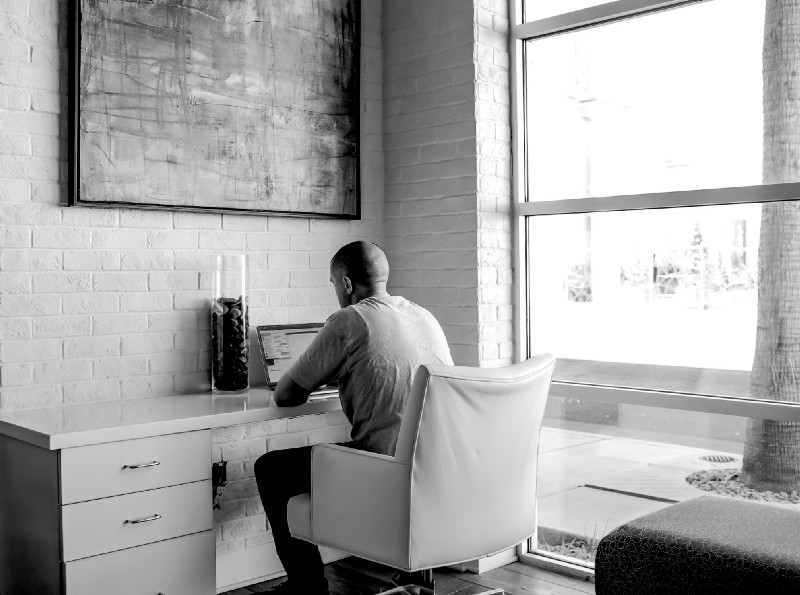
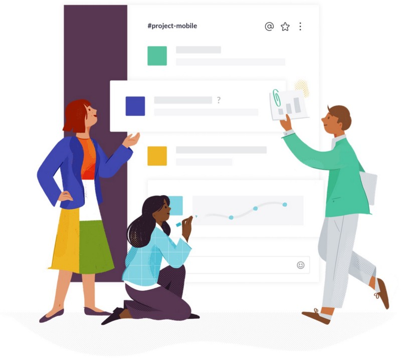

Lessons from Remote Working
For the past few years as a freelancer, I've done many forms of remote work. I've worked both part and full-time remote positions, I've also worked with teams across multiple time-zones, in locations ranging from home offices, hotdesking, even camping and crummy motels, so I have a fairly broad range of experience with remote working. It seems to be the trend that many companies have opted for, and this is definitely a great idea, both for the employee and the company. The employee can often cultivate a better work-life balance and the company can access a far wider range of talent than what may exist in the local area.

However, with remote teams, there is a cost paid for the lack of a physical presence. If right now, communication is sloppy and requires a lot of working around the system, going remote is going to be difficult. Most of this article deals with the issues of communication but also problems can come up with regard to teamwork, motivation and the potential for a class-based communication system, with remote workers being second class citizens so to speak. I'm also going to be stealing a bunch of stuff from the Agile framework, as (intentionally or not), it seems to cultivate very good remote working conditions, from my experience.
Communication
So the first thing is (obviously enough) communication. You will have to cultivate a lot more intentional focus on communication. You begin to appreciate how excellent the bandwidth of face to face conversations is when its gone. One way in which my more successful remote teams worked is through the Agile framework. Agile is a programmer-specific framework, but there are still lessons that can be taken away for non-development teams. Many of the things I've found that worked within remote teams have strong Agile ties.
Enforce Morning stand-ups
So within Agile, there is the idea of a morning standup, where you essentially discuss what you worked on yesterday, any particular blockers to that work and what you plan on doing today. This sort of morning meeting often becomes the backbone of communication with remote teams, it also has a great bang for your buck in terms of actually building a sense of a team. Too easily can you slip into the role of a lone remote worker and ignore the resources on your team, you do so at your peril, so having a semi-formal place to air out your issues and perhaps get valuable insights from others should not be under-estimated. For those running teams, you can get a huge amount of value in a very short space of time.
Emulate the water cooler
While I'm on the topic of morning retro's there is another aspect to meetings that I found definitely increases my feeling of working within a team and that was the watercooler-esque conversations with the team before and after meetings. These to me are somewhat essential if you want to try and cultivate a good team vibe. Typically at the start of a remote meeting, someone will be late or have connection issues, use the time to chat about life, catch up with the people who are online with you and fill them in on what's new in your life. These things are really easy to ignore but when you start getting into a routine of informal chatting it can really create a great connection between team members.
Retrospectives are also useful
Retros are another part of the Agile methodology, essentially they are a semi-regular meeting to review how a past sprint(few weeks work) has gone. There's plenty of info online if you want to dig in, but essentially, it's an intentional review of how things are going outside of the work itself. One topic that came up often in retro's is how we could improve communication, we'd often face an issue, come up with a potential solution, try it out and see how it went in the next retro. The points I'm sharing here are just a starting off point, it's going to be up to you and your team to figure out what works best and retro's can be a great way to put some structure around that and (to some extent) force these beneficial reviews because it's not like you going to happen across each other at lunchtime, and chat out your ideas. Formalise these types of insight capturing or they will be lost.
Everyone should act as if remote
One thing that can kill a remote team vibe is where most of the team is in an office and remote members have to join from a screen in. I've sat in such meetings and essentially you become a second class member of the meeting. I guarantee you will not say nearly as much as you could have, had you been on-site. Interjecting on someone's point is really difficult and awkward when it's on a room full of people separate to you, the time delay alone can mean awkward breaks in the conversation, you'll give up and often won't respond to much unless there's specific attention directed towards you. I've been there, it happens and valuable insights can be missed as a result.
Try to see if you can test having all team members working a remote setup. It will help immensely with balancing out communication barriers between the team and if there are sub-conversations that need to be had been two members in the same office, they can always take it offline after the remote meeting has happened, so hopefully, it should'nt ruin the office-workers bandwidth too much.
Slack is actually awesome
While I didn't want to specifically talk much about tools, I will say this, just use Slack. It's flexibility, the variety of communication methods and ease of use make it the best tool I've found for working remotely. Hands down. There's plenty of reviews discussing features, but for me, the best part was when a text-conversation became too burdensome, how easily it was to just swap to an audio/video call or a screen-sharing session. It's simply awesome.
If the company you work with doesn't use Slack and is using something rubbish like Skype or something painful like an old ass version of Cisco WebEx that doesn't support Linux(ugh), appear.in can also provide a handy video chat tool that requires no sign-up and just a browser to get things going. Can definitely recommend it too.
Try use video chat where you can, I have found it can get really easy to get too comfortable typing to communicate with team members. Never underestimate the value of a video conversation, even if it often feels like too much effort from the comfort of your office chair.

Get dressed for work
This is just a small point, but it really will do you no harm to get dressed in the morning. You want to create as much of an appearance of a working environment as possible, even when it couldn't be further from the truth. Yanking a shirt out of my backpack gave me some sense of professionalism even when it was a laptop on my lap on some dingy couch in a run-down motel.
The more simulated distance you can create between "work you" and "life you" the less those two things will bleed into each other, which is better for your headspace and of those around you, coworkers and family benefit too. So try come up with as many simulated differences as possible. Perhaps try having a routine that emulates commuting or a habit that signifies "this is the start of work", that isn't just getting right into work.
Try to make it fun
One of the QA members I worked with always came up with nice ideas for each of the remote workers to share something about their location or day for each retro. So try take a photo of your workspace or go outside your front door and take a picture, these little things were a really nice way to get a sense of what was going on in your co-worker's lives. Not essential but definitely a nice thing to do.
Use the focus
I've worked in many companies (remote and on-site) that have had shitty communication setups. Too many meetings, too many people in meetings, pointless meetings with no aim, the list goes on. This often happened because there was no barrier to just adding a few more people who might be useful in that meeting, hey the meeting room is a few feet from my desk, I can drop in for a bit.
With remote working, you actually have a nice default which is that communication doesn't come easy, so make use of that. Start to become very intentional about how you communicate and why. You can create a very refined, tight communication structure, filled with value because communication itself becomes a regular topic to refine in and of itself. There are no natural moments where two people are sitting beside each other where you can informally ask "Hey can I run this by you", those interactions get forgotten when you're running a local team, for better or worse.
What now?
Myself, I've since moved back to a full-time office position within an office, with a generous option to remote work(which I've taken them up on occasion), I'll share another post on why at a later stage, but if I remember any other insights from my years of remote working, I will certainly add it here.